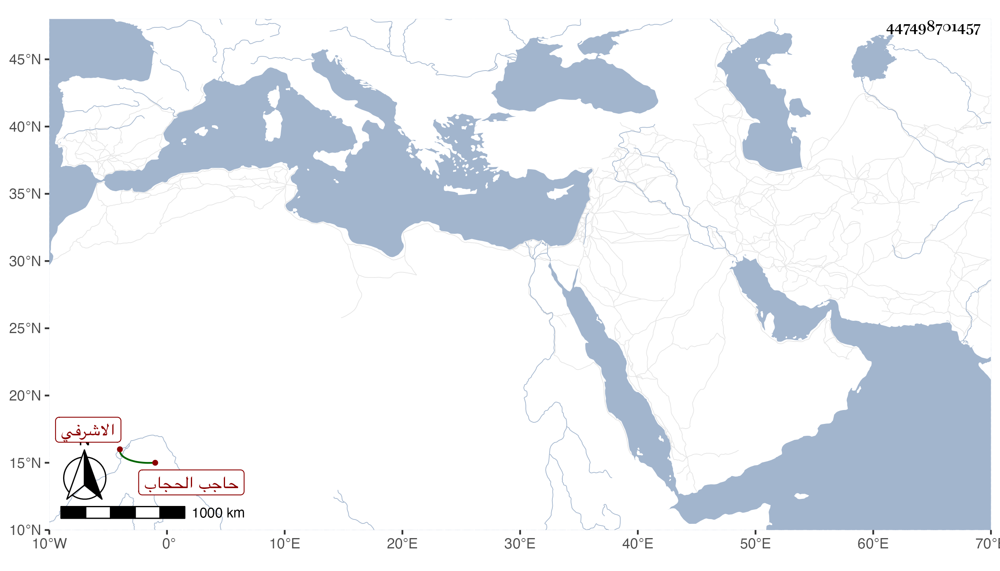

0902Sakhawi.DawLamic.ITO20230111-ara1.EIS1600.447498701457
Biography ID: 447498701457
177
تنبك قرا الاشرفي اينال حاجب الحجاب . تنقل إلى أن عمل الدوادارية الثانية في أيام الاشرف قايتباي وقتا ثم صار أحد المقدمين ثم حاجب الحجاب . وسافر في عدة تجاريد منها التي في سنة خمس وتسعين وحمدت مباشراته سيما مع ميله للعلماء في الجملة ، حتى انه يقرأ على الزين جعفر في القرآن وعلى الامشاطي قبل القضاء في الفقه ثم على غيره وتردد إليه عباس المغربي والخطيب الوزيري وتكرر سخطه عليهما ، وآل أمره إلى أن صار يقرأ على التقي بن الاوجاقي بحيث تعصب معه على الزيني زكريا ، وسئلت في أيام دواداريته في الاجتماع به لقراءته علي فما سمحت مع سماعه مني لبعض الأحاديث واستجازته لي بفضل الخيل للدمياطي ، وحلف لي مرة انه لا يقدم على أحدا ولكن ما وجدت لذلك منه ولا من كثيرين ممن بزعمه منهم ثمرة ، وممن يتردد إليه وينوه هو بفضيلته أبو النجا بن الشيخ خلف وقام معه في ردع الجلال بن الاسيوطي كثر الله من أمثال الأمير فهو من حسنات أبناء جنسه وقد توفى له عدة أبناء في طاعون سنة سبع وتسعين من ابنة الدوادار بردبك .
